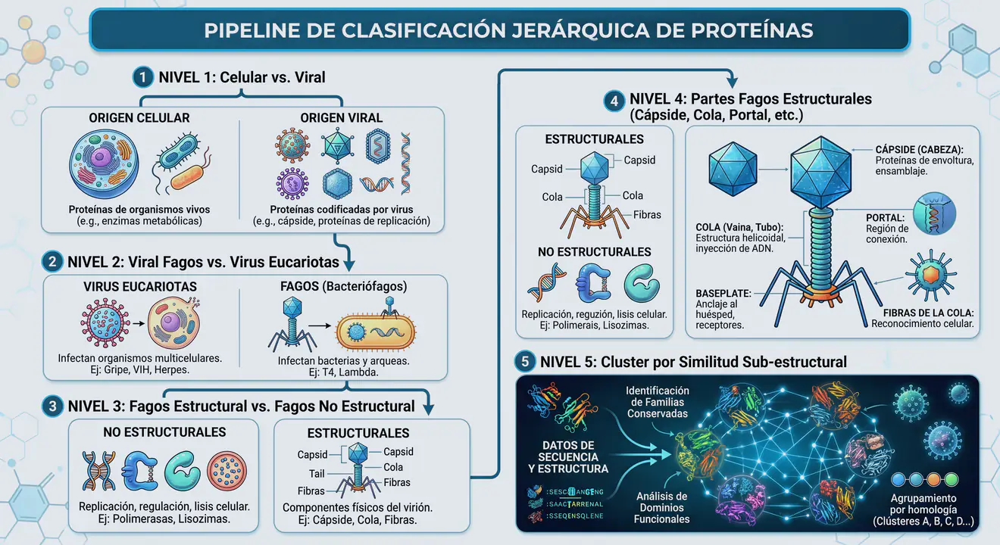
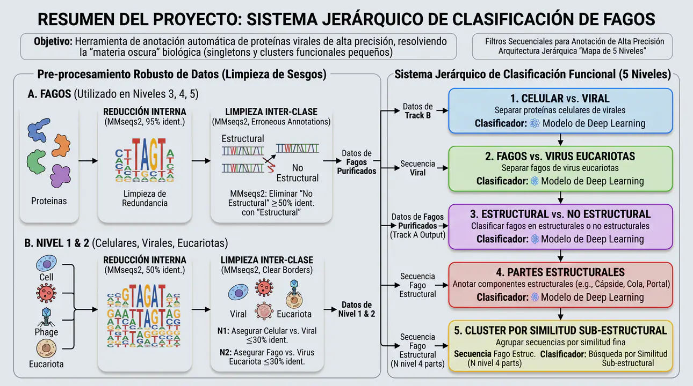
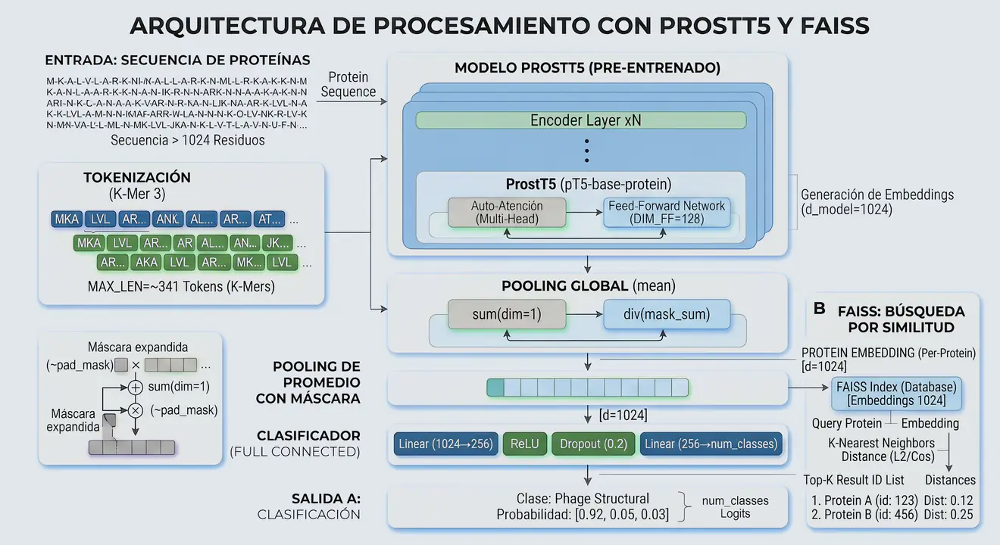
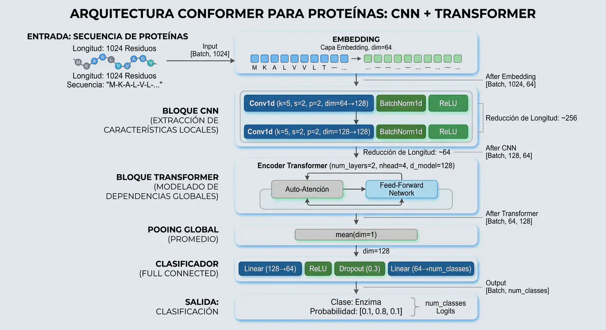
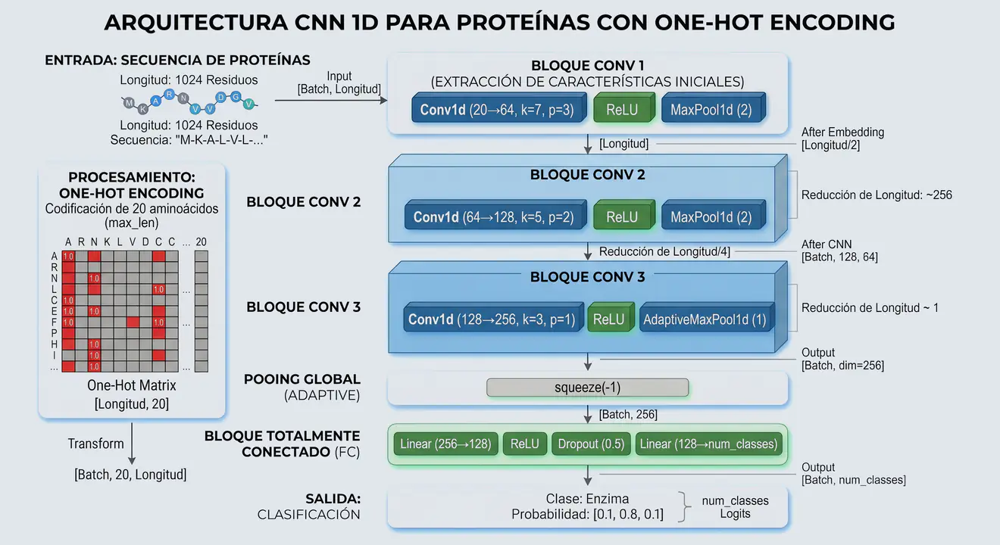
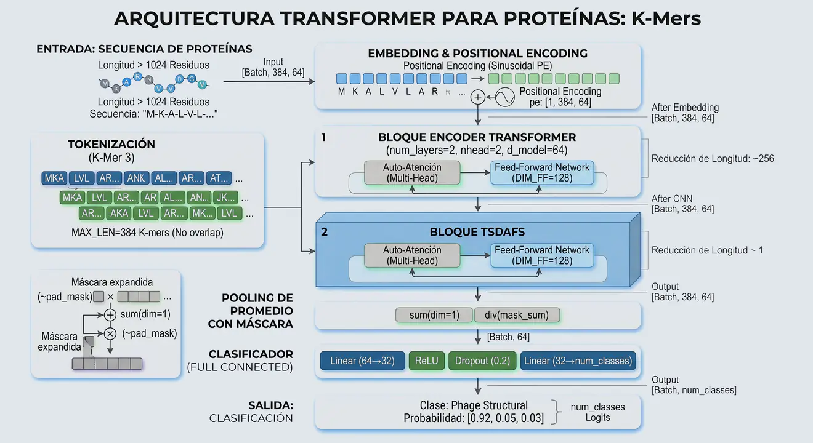
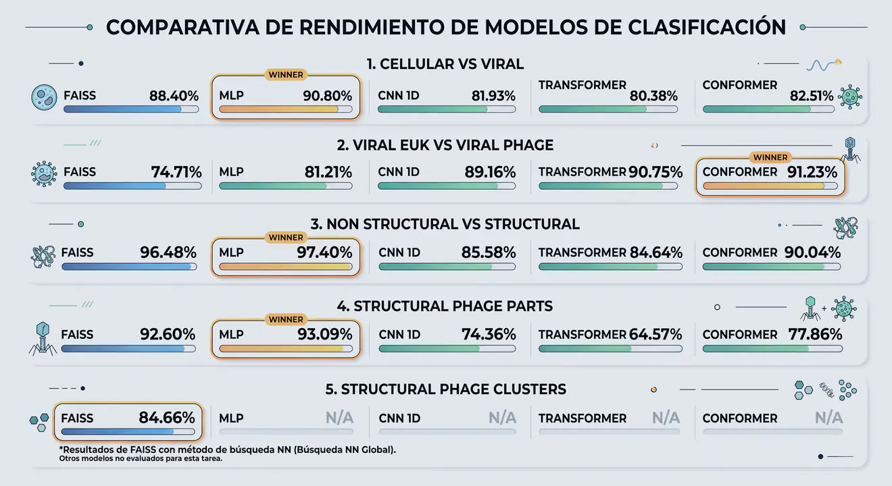

Anotación automática de proteínas virales de alta precisión, resolviendo la materia oscura biológica con Deep Learning y embeddings densos.
GitHub ProjectEste sistema aborda la complejidad de las proteínas de fagos mediante una estructura jerárquica que combina Deep Learning con búsqueda de similitud eficiente.
Utilizamos embeddings de ProstT5 y arquitecturas como Conformer para identificar funciones incluso en secuencias únicas o poco comunes.

Nuestro flujo de trabajo se divide en 5 filtros secuenciales que actúan como un embudo de precisión biológica.

¿Qué se clasifica? Separación de proteínas de origen celular (huésped) de las de origen puramente viral.
¿Por qué? Las muestras biológicas suelen contener contaminación genómica del huésped. Este filtro asegura que el pipeline procese únicamente señales virales relevantes.
¿Qué se clasifica? Discriminación entre virus que infectan bacterias (Fagos) y virus que infectan células eucariotas.
¿Por qué? Los fagos presentan firmas genómicas y dialectos de k-mers distintos debido a sus presiones evolutivas específicas. Aquí es donde transicionamos a modelos de secuencia pura.
¿Qué se clasifica? Diferenciación entre el "chasis" físico del virus (proteínas que forman el virión) y su maquinaria metabólica/replicativa.
¿Por qué? Esta distinción binaria es crítica para la anotación funcional precisa, ya que permite aislar los componentes morfológicos del ruido metabólico.
¿Qué se clasifica? Clasificación multiclase en 10 categorías morfológicas (Cápside, Cola, Portal, Baseplate, etc.).
¿Por qué? Define la arquitectura fundamental del virus. Es el nivel de anotación más detallado para entender cómo está construido el fago.
¿Qué se clasifica? Asignación funcional de alta resolución mediante la creación de clusters por similitud de embeddings.
¿Por qué? Es el nivel más complejo. Resolvemos el problema de los 'singletons' (proteínas únicas) agrupándolas por su 'significado' biológico capturado en el espacio latente de ProstT5.
Metodología: Se generan clusters de similitud y se utiliza FAISS para realizar búsquedas One-Shot. Una secuencia consulta se asigna a un cluster mediante el método de vecino más cercano (NN) o por distancia al Centroide del cluster, permitiendo anotar funciones que las herramientas tradicionales ignoran.

Traduce secuencias en vectores matemáticos densos de 1024D que capturan el contexto evolutivo.

Arquitectura de vanguardia que combina la atención global de Transformers con convoluciones locales.

Detector de motivos conservados y patrones químicos locales en la secuencia primaria.

Enfoque atencional para capturar dependencias a largo plazo y sesgos genómicos.

La transición a modelos de secuencia pura (Conformer) en el Nivel 2 es clave para detectar firmas genómicas de huésped.